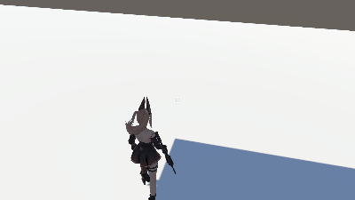

Web Design
React
代号：射击
项目详情页（可继续补充展示视频、版本日志与试玩说明）

🎮 游戏介绍
聚焦环境识别与无缝动作系统的射击玩法原型，通过 IK、行为树与动画系统协同，提升角色动作反馈与战斗沉浸感。
🕹️ 操作指南
- 基础移动： 请按项目当前版本的默认键位进行移动与交互（可在这里补充具体键位）。
- 核心操作： 重点体验本项目的核心机制（例如切换形态、技能释放、构建、交互触发等）。
- 建议流程： 先完成新手流程，再挑战高难内容，体验系统深度与手感变化。
💡 设计思考：
这个项目希望在“易上手”和“有深度”之间取得平衡：前几分钟能快速理解玩法，持续游玩时又能通过系统组合、反馈节奏与关卡变化获得新鲜感。